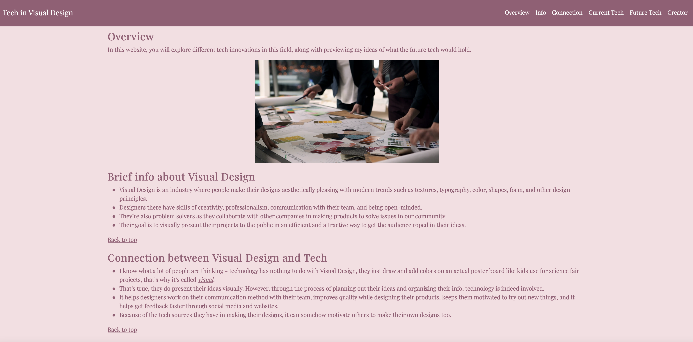

For this year-long project, we used HTML, CSS, and Bootstrap to create our very first website! The idea of this freedom project is to make connections between technology and other fields in our society, a field that we're passionate about. For me, I created a website about technology in Visual Design and how it impacts people who work there, along with predicting what future tech would hold for this industry.
The most challenging part of making this project was the amount of info I needed to put on my website. It was a long process of researching and synthesizing my notes for my project. I also found time management a bit frustrating because we didn't work on the freedom project a lot due to remote learning. Although we had a lot of time to plan out our website, I wish we had more time to build and make our website perfection.
Speaking of time management, that was part of my takeaway. I spent so much making my website look aesthetically pleasing that I didn't spend a lot of time getting a lot of info on my website. I think my website would look better with more info for people to understand the connection I'm making.
Preview